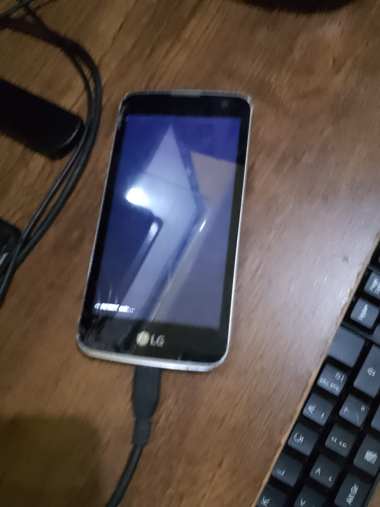

LG K4 2016 (lg-k130f)
|
 Phone on fastboot mode | |
| Manufacturer | LG |
|---|---|
| Name | K4 |
| Codename | lg-k130f |
| Released | 2016 |
| Category | testing |
| Original software | Android 5 |
| Hardware | |
| Chipset | MediaTek MT6735M |
| CPU | 1 GHz Quad Core |
| GPU | Mali-T720 |
| Display | 480x854 |
| Storage | 8 GB |
| Memory | 1 GB |
| Architecture | aarch64 |
| USB Networking | |
|---|---|
| Flashing | |
| Touchscreen | |
| Display | |
| WiFi | |
| FDE | |
| Mainline | |
| Battery | |
| 3D Acceleration | |
| Audio | |
| Bluetooth | |
| Camera | |
| GPS | |
| Mobile data | |
| SMS | |
| Calls | |
| USB OTG | |
| NFC | |
| Accelerometer | |
|---|---|
| Magnetometer | |
| Ambient Light | |
| Proximity | |
| Hall Effect | |
| Barometer | |
| Power Sensor | |
| Camera Flash | |
|---|---|
| Keyboard | |
| Touchpad | |
| USB-A | |
| HDMI/DP | |
| Ir TX | |
| Ir RX | |
| Stylus | |
| Haptics | |
| Ethernet | |
| FOSS bootloader | |
Contributors
Users owning this device
- Brunothedev
- Mark (Notes: Actual phone model number I have is LG-K120E)
How to enter fastboot
Press Volume Down on your device and then plug the cable, you now can use fastboot commands
How to unlock the bootloader
Install mtkclient run:
mtk e userdataafter that:
mtk da seccfg unlockDevelopment
The device bootloops, fixing that
UART setup and soldering guide
Connecting UART will require you to solder two wires: one wire to ground and the second wire to the transmit pad on the motherboard. Additionally, you will need a USB to TTL module.
| WARNING: Soldering a wire to the transmit pad is difficult, and if not done carefully, there is a high chance of destroying the solder pad, which then becomes very difficult to repair. You have been warned! |
To solder the wire successfully, especially for a soldering beginner, it's recommended to find some scrap electronic board to train soldering on and try to solder a wire to the smallest solder pad you can find on the board. To solder a wire to the small UART transmit pad, you will need a small tip for the soldering iron, solder, and a microscope (it doesn't need to be expensive). Flux is also good to have to help the solder flow, but it's possible to solder without it.
Next, find a small wire and strip the wire end open with a knife to reveal strands of small wires inside. Leave just one strand of wire for soldering, and once you have done that, fill the strand with solder.
| If the strand doesn't accept solder, take a knife and scratch the strand of wire with the knife (this is to remove oxidation) and be gentle scratching it, as the strand can easily break. |
Once you have tinned the strand with solder, then proceed to solder the strand of wire to the transmit pad, TX0. Take your time to solder; no rush.
When you have successfully soldered the strand of wire to transmit pad (TX0), then connect that wire or also solder the wire to the receive pad (RX) on your USB to TTL module.
Also remember to solder the ground wire :).
| You don't need to solder the ground wire to the small UART ground solder pad; you can use any other grounding pad on the board. Use two multimeter leads (multimeter set to resistance mode or the continuity/beep mode) to find a common ground. Use one lead of the multimeter to poke around the board and keep the other lead on one of the UART ground pads number 2 or number 5 (refer to schematic picture below). Once you have found 0 ohms or the multimeter beeps on beep mode, it usually means you have found a ground. If you are still unsure, research online for instructions on how to find ground. |
For me, the writer for this UART setup and soldering guide section, I used CH341A v1.7 programmer with a voltage selection switch. I used the 1.8V setting.
| WARNING: UART for this phone outputs 1.8V. Be careful what USB to TTL voltage you connect, as it could cause problems or even destroy your phone. Take your own voltage measurements with a multimeter to be sure. You have been warned! |
| UART baudrate for bootrom is 115200, and to get readable text after bootrom output, switch the speed to 921600, which is the lk output. |
For further documentation or troubleshooting, refer to the postmarketOS serial debugging wiki: https://wiki.postmarketos.org/wiki/Serial_debugging#Plugging_in_the_cable

{kind=link}
{kind=link}